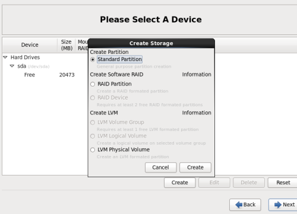
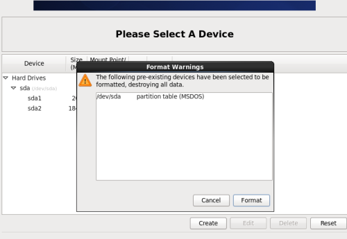

备注：
CentOS 6.6系统镜像有32位和64位两个版本，这里提供DVD版的。
4G内存以上使用x86_64位的系统。
附：CentOS 6.6下载地址
32位DVD版本：
http://vault.centos.org/6.6/isos/i386/CentOS-6.6-i386-bin-DVD1.iso
64位DVD版本：
http://vault.centos.org/6.6/isos/x86_64/CentOS-6.6-x86_64-bin-DVD1.iso
其他版本：
http://vault.centos.org/6.6/isos
安装说明：
1、安装CentOS 6.6系统的计算机内存必须等于或者大于628M（最小内存628M），才能使用图形安装模式。
2、CentOS 6.6的系统安装方式分为：图形安装模式和文本安装模式。
3、CentOS 6.6文本安装模式不支持自定义分区，建议使用图形安装模式安装。
5、CentOS 6.6系统运行方式分为：带图形界面、可以用鼠标操作的图形化方式和不带图形界面、直接用命令行操作的文本方式。
一、安装CentOS 6.6
用光盘成功引导系统，会出现下面的界面
界面说明：
Install or upgrade an existing system 安装或升级现有的系统
Install system with basic video driver 安装过程中采用 基本的显卡驱动
Rescue installed system 进入系统修复模式
Boot from local drive 从本地硬盘启动
Memory test 内存检测
这里选择第一项，安装或升级现有的系统，回车。

出现是否对CD媒体进行测试的提问，这里选择“Skip”跳过测试（方向键控制移动）。
出现下面的界面，Next下一步
选择语言为：English（English） #生产服务器建议安装英文版本
键盘选择为：U.S.English
选择第一项，基本存储设备，下一步
格式化，选择第一项：Yes，忽略所有数据
设置主机名，这里默认即可，安装完成之后可以再修改
下一步
时区选择：Asia/Shanghai”System clock user UTC” #取消前面打勾，不使用UTC时间
设置root密码
注意：如果你使用的密码过于简单，系统会自动提示：您的密码不够安全，过于简单化/系统化，选择“Use Anyway” 无论如何都使用。
选择最后一项，Create Custom Layout 创建自定义分区
使用说明：
which type of installation would you like？ 你选择哪种类型的安装？
Use All space 使用所有空间（删除设备所有分区）
Replace Existing Linux System（s） 替换现有Linux系统（只删除之前linux安装创建的）
Shrink Current System 缩小现有系统（缩小现有分区以便默认布局生存剩余空间）
Use Free space 使用剩余空间（保留现有分区数据且只使用设备中未分区空间）
Create Custom Layout 使用自定义分区
可以看到硬盘的容量，我这里显示的是20G，现在自定义分区
选中空闲分区Free，点创建Create
选择标准分区Standard Partition，点创建Create

文件系统类型：swap（虚拟内存）
设置大小Size：2048（内存小于2G时，设置为内存的2倍；内存大于或等于2G时，设置为2G）
其他选项默认即可
确定 OK
继续选中空闲分区Free，点创建Create
选择标准分区Standard Partition，点创建Create
挂载点：/
文件系统类型：ext4
选中“使用全部可用空间”
其他选项默认即可
确定 OK
注意：生产环境建议单独划分一个date数据区，保证安全。
创建好分区之后，如下图所示，然后点Next
点“Format”格式化

选择“Write changes to disk”将修改写入磁盘
保持默认 Next
选择Minimal（生产环境）
开始安装
安装完成，点“Reboot”重新引导，系统自动重启
重启之后，出现下面登录界面
输入账号root和密码（输入密码的时候是不显示的），
成功登录系统 如下图

说明：CentOS 6.6默认安装好之后是没有自动开启网络连接的！
修改IP地址
修改/etc/sysconfig/network-scripts/ifcfg-eth0文件，如果有多张网卡，则修改相应的网卡
# vi /etc/sysconfig/network-scripts/ifcfg-eth0
按i进入编辑模式
DEVICE=eth0 #网卡对应的设备别名
BOOTPROTO=static #网卡获得ip地址的方式（默认为dhcp，表示自动获取）
HWADDR=00:0C:29:58:DB:71 #网卡MAC地址（物理地址）
IPADDR=192.168.1.31 #IP地址
NETMASK=255.255.255.0 #子网掩码
ONBOOT=yes #系统启动时是否激活此设备
按ESC键退出，并输入:wq!（w保存，q退出，!强制退出）
修改网关地址:
修改/etc/sysconfig/network文件
\# vi /etc/sysconfig/network
NETWORKING=yes #表示系统是否使用网络，no表示不能使用网络
HOSTNAME=doiido #设置本机的主机名，要和/etc/hosts中设置的主机名相同（#hostname ）
GATEWAY=192.168.1.1 #设置网关的IP地址(设置你自己的网关) 这个时候已经可以ping通IP地址，但是还无法ping通域名，因此需要修改DNS
修改DNS:
修改/etc/resolv.conf文件
# vi /etc/resolv.conf
nameserver 192.168.1.1 #我路由器默认的
nameserver 114.144.114.114 #国内域名服务器
重启网卡:
# service network restart
正在关闭接口eth0：[确定]
关闭环回接口：[确定]
弹出环回接口：[确定]
弹出界面 eth0： [确定]
这个时候，系统就可以正常的上网了
#注：其实网关地址和DNS也是可以写在ifcfg-eth0中，但是为了规范起见，将他们分开写.
ping 114.114.114.114